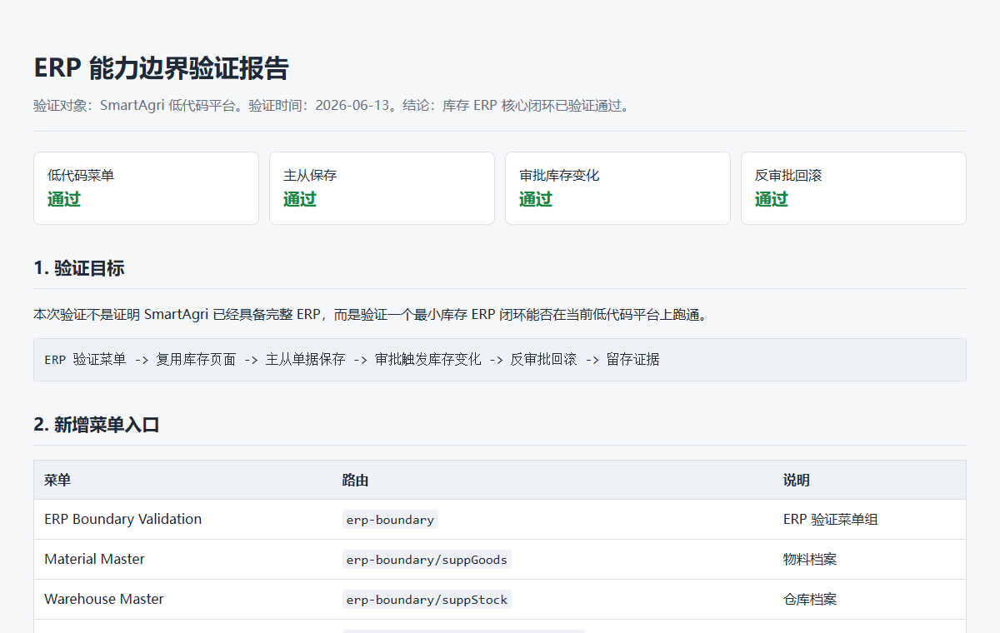
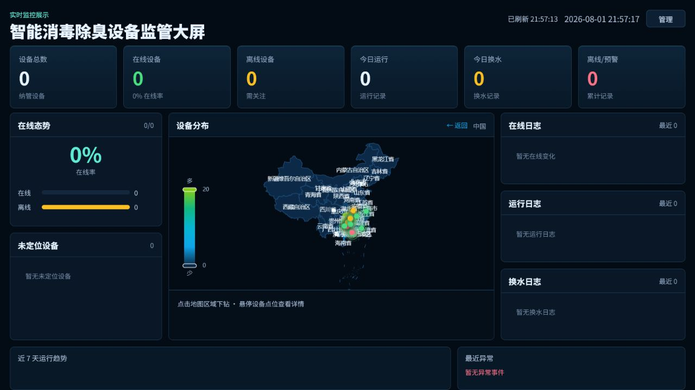
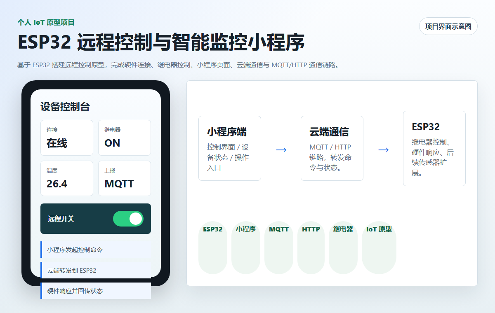

CASE 01 · ERP / 低代码
养殖渔业 ERP 业务系统
把养殖业务的基础资料、库存、采购销售和设备相关流程，细化为可配置的模块、表单、字段、状态与校验规则。
我参与的工作
业务流程梳理、模块与字段设计、页面/流程配置、关键闭环验证。
可展示的证据
低代码菜单、单据保存、审批触发库存变化、反审批回滚与验证记录。
ERP / IoT / 低代码 / AI 辅助交付
从养殖业务建模、低代码流程配置，到设备接入、状态监控与交付验证，专注把现场需求变成可运行、可迭代的系统能力。
SELECTED WORKS
点击切换案例

01 / PROJECT CASES
每个案例聚焦我实际参与的工作、可展示的交付证据，以及这套能力可以迁移到什么场景。

CASE 01 · ERP / 低代码
把养殖业务的基础资料、库存、采购销售和设备相关流程，细化为可配置的模块、表单、字段、状态与校验规则。
业务流程梳理、模块与字段设计、页面/流程配置、关键闭环验证。
低代码菜单、单据保存、审批触发库存变化、反审批回滚与验证记录。
CASE 02 · IOT / 数据看板
面向现场设备管理，把在线状态、运行记录、换水记录、异常事件与地理分布汇总为一张可读的监管视图。
监控指标梳理、状态与事件展示、管理界面和大屏功能联动。
实时监控、在线态势、设备地图、运行/换水日志与异常反馈区。

CASE 03 · ESP32 / 小程序
围绕养殖场消毒除臭设备，完成小程序控制页面、云端通信与 ESP32 硬件状态反馈之间的联动链路。
前端控制界面、设备状态呈现、云端接口协作与远程控制流程。
小程序发出控制指令，云端转发，ESP32 响应并回传状态的完整闭环。
02 / CAPABILITY SYSTEM
不是堆技术名词，而是用一条能落地、能验证的交付链条组织工作。
识别对象、流程、状态、规则与协作关系。
把需求映射成模块、字段、表单、权限与数据关系。
配置可用页面和流程，让业务逻辑可操作、可维护。
连接设备状态、消息协议、控制指令与可视化反馈。
通过关键链路验证、记录证据并支持后续迭代。
03 / AI ENGINEERING PRACTICE
这里展示的是经筛选后的工程方法与技术边界，不公开任何项目源码、配置、凭据或业务数据。
AI SYSTEM 01
把原始资料、结构化 Wiki、设计规范、项目复盘和可发布成果分层组织，让知识可以追溯、复用和持续更新。
AI SYSTEM 02
将项目探索、需求拆解、实现验证、代码审查和复盘归档沉淀为可调用的工程方法，避免 AI 只停留在临时问答。
AI SYSTEM 03
在 React/Vite、Tauri/Rust、Go sidecar、.NET、uni-app 与 ESP32 组合中，利用 AI 辅助理解、实现、验证和产品体验迭代。
04 / DELIVERY METHOD
我会用 AI 辅助需求拆解、代码理解、原型验证和问题排查；核心仍是把每个工具的输出落回业务边界、系统行为和可验证结果。
从业务现场到代码与设备，从资料整理到可复用工作流，重点始终是：信息可追溯、过程可验证、系统可持续迭代。